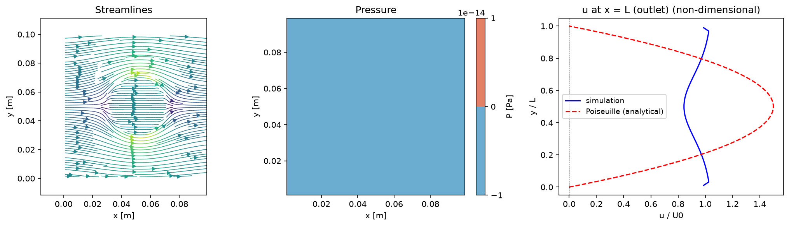

2. 移流項
このステップで書くのはwrk/advection.f90の移流項（adv）だけ。
境界条件bc.f90は完成した形で用意してあるので触らない（自分で書くのは4. 境界条件で
cavityに書き換えるとき）。粘性（diffusion.f90）と圧力Poisson（poisson.f90）も次のステップ以降なので空欄のままでよい。
支配方程式
このコードが解くのは非圧縮のNavier-Stokes方程式。ベクトルで書くと:
$$ \frac{\partial \mathbf{u}}{\partial t} + \underbrace{(\mathbf{u}\cdot\nabla)\mathbf{u}}_{\text{移流項}} = -\frac{1}{\rho}\nabla p + \nu\nabla^2\mathbf{u} \tag{1} $$
このステップで実装するのは移流項 $(\mathbf{u}\cdot\nabla)\mathbf{u}$（下線部）。他の項（圧力・粘性）は次のステップ以降。
題材: channel flow（境界条件は与える）
題材は channel flow:
左端から一様流 U0 を流し込み、上下は静止した壁（no-slip）、右端は自由に流れ出る（流出）。
channel flow の計算領域と境界。左＝一様流入、上下＝静止壁（no-slip）、右＝流出。
これらを配列に落とし込んだbc.f90（boundary_condition）はすでに完成させてある。
壁の値を格子点にどう与えるか（スタガード格子ならではのゴーストセルの使い方）は、
4. 境界条件でbc.f90を cavity 用に自分で書き換えるときにまとめて扱う。
なお channel では流入は固定値、流出は外挿で決めるため、そのままでは出入りの量が釣り合わない。
bc.f90では出口速度を毎ステップ再スケーリングして質量を保存させている（後で圧力Poissonを解くときに必要になる）。
Step 1: 移流項だけを取り出す
分数ステップ法では、運動量式の右辺を移流 → 粘性 → 圧力の順に1つずつ処理する。 まず運動量式を成分ごとに書き下すと:
$$ \frac{\partial u}{\partial t} + \underbrace{u\frac{\partial u}{\partial x} + v\frac{\partial u}{\partial y}}_{\text{移流項}} = -\frac{1}{\rho}\frac{\partial p}{\partial x} + \nu\left(\frac{\partial^2 u}{\partial x^2}+\frac{\partial^2 u}{\partial y^2}\right) \tag{2} $$
$$ \frac{\partial v}{\partial t} + \underbrace{u\frac{\partial v}{\partial x} + v\frac{\partial v}{\partial y}}_{\text{移流項}} = -\frac{1}{\rho}\frac{\partial p}{\partial y} + \nu\left(\frac{\partial^2 v}{\partial x^2}+\frac{\partial^2 v}{\partial y^2}\right) \tag{3} $$
このステップでは時間変化項と移流項だけを残す（圧力項・粘性項は後のステップで足す）:
$$ \frac{\partial u}{\partial t} = -\left(u\frac{\partial u}{\partial x} + v\frac{\partial u}{\partial y}\right) \tag{4} $$
$$ \frac{\partial v}{\partial t} = -\left(u\frac{\partial v}{\partial x} + v\frac{\partial v}{\partial y}\right) \tag{5} $$
移流項は見慣れた非保存形で書いた（保存形 $\tfrac{\partial(uu)}{\partial x}+\tfrac{\partial(uv)}{\partial y}$ とも書けるが、非圧縮 $\nabla\cdot\mathbf{u}=0$ では数学的に等価）。
Step 2: 時間の離散化（前進Euler）
時間微分を差分に変える。前ステップ（時刻 $t_n$）の値を $u^{n}$、 そこから $\Delta t$ だけ移流で進めた値を $u^{\mathrm{adv}}$ と書くと、 前進Eulerでは時間微分を前進差分で近似する:
$$ \frac{\partial u}{\partial t} \;\approx\; \frac{u^{\mathrm{adv}} - u^{n}}{\Delta t} \tag{6} $$
これをStep 1の式に代入する。右辺の移流項は、いま手元にある前ステップの値（$u^{n},\ v^{n}$）で評価する （陽的な扱い）:
$$ \frac{u^{\mathrm{adv}} - u^{n}}{\Delta t} = -\left(u^{n}\frac{\partial u^{n}}{\partial x} + v^{n}\frac{\partial u^{n}}{\partial y}\right) \tag{7} $$
$u^{\mathrm{adv}}$ について解けば、そのままコードにできる更新式になる。y成分も同じ手順で:
$$ u^{\mathrm{adv}} = u^{n} - \Delta t\left(u^{n}\frac{\partial u^{n}}{\partial x} + v^{n}\frac{\partial u^{n}}{\partial y}\right) \tag{8} $$
$$ v^{\mathrm{adv}} = v^{n} - \Delta t\left(u^{n}\frac{\partial v^{n}}{\partial x} + v^{n}\frac{\partial v^{n}}{\partial y}\right) \tag{9} $$
$u^{\mathrm{adv}},\ v^{\mathrm{adv}}$ は移流だけ進めた仮流速（このあと粘性・圧力でさらに更新される。コードでは更新後も同じ配列 u, v に入れる）。
Step 3: 空間の離散化（i+1/2ずらし格子）
残るは右辺の空間微分。x成分の式は u の点（$u_{i+1/2,\,j}$）の上で評価する。必要な量を1つずつ差分にすると:
- $\partial u/\partial x$ — 両隣の
u点を使った2次精度中心差分: $\left.\frac{\partial u^{n}}{\partial x}\right|_{i+1/2,\,j} \approx \frac{u^{n}_{i+3/2,\,j}-u^{n}_{i-1/2,\,j}}{2\Delta x}$ - $\partial u/\partial y$ — 上下の
u点で同様に: $\left.\frac{\partial u^{n}}{\partial y}\right|_{i+1/2,\,j} \approx \frac{u^{n}_{i+1/2,\,j+1}-u^{n}_{i+1/2,\,j-1}}{2\Delta y}$ - 係数の $u^{n}$ — その場の値 $u^{n}_{i+1/2,\,j}$ をそのまま使う。
- 係数の $v^{n}$ —
u点の上にvは無いので、まわりの4つのvを平均した $\bar{v}$ を使う（下図）。
u点（赤）のまわりの4つのv点（緑）。この平均が離散式の $\bar{v}$（コードの中間変数 va）になる。
これらを Step 2 の更新式に入れると、x方向の最終形:
$$ u^{\mathrm{adv}}_{i+1/2,\,j} = u^{n}_{i+1/2,\,j} - \Delta t\left[\, u^{n}_{i+1/2,\,j}\,\frac{u^{n}_{i+3/2,\,j}-u^{n}_{i-1/2,\,j}}{2\Delta x} + \bar{v}\,\frac{u^{n}_{i+1/2,\,j+1}-u^{n}_{i+1/2,\,j-1}}{2\Delta y} \,\right] \tag{10} $$
$$ \bar{v} = \tfrac{1}{4}\left(v^{n}_{i,\,j+1/2}+v^{n}_{i+1,\,j+1/2}+v^{n}_{i,\,j-1/2}+v^{n}_{i+1,\,j-1/2}\right) \tag{11} $$
y方向は u と v の役割を入れ替えるだけ。v の点（$v_{i,\,j+1/2}$）の上で評価し、
今度は係数の u が無いので4点平均 $\bar{u}$ を使う:
$$ v^{\mathrm{adv}}_{i,\,j+1/2} = v^{n}_{i,\,j+1/2} - \Delta t\left[\, \bar{u}\,\frac{v^{n}_{i+1,\,j+1/2}-v^{n}_{i-1,\,j+1/2}}{2\Delta x} + v^{n}_{i,\,j+1/2}\,\frac{v^{n}_{i,\,j+3/2}-v^{n}_{i,\,j-1/2}}{2\Delta y} \,\right] \tag{12} $$
$$ \bar{u} = \tfrac{1}{4}\left(u^{n}_{i+1/2,\,j}+u^{n}_{i-1/2,\,j}+u^{n}_{i+1/2,\,j+1}+u^{n}_{i-1/2,\,j+1}\right) \tag{13} $$
数式とコードの対応
半整数の添字はコードの配列にそのまま対応する（u(i,j) が $u_{i+1/2,\,j}$ を表すという初期条件の規則）。
上の最終形をFortranにするときの対応は:
| 数式 | コード |
|---|---|
| $u^{n}_{i+1/2,\,j}$ | un(i,j) |
| $u^{n}_{i+3/2,\,j},\ u^{n}_{i-1/2,\,j}$ | un(i+1,j), un(i-1,j) |
| $u^{n}_{i+1/2,\,j+1},\ u^{n}_{i+1/2,\,j-1}$ | un(i,j+1), un(i,j-1) |
| $\bar{v},\ \bar{u}$（4点平均） | va, ua（中間変数） |
| $\Delta t,\ \Delta x,\ \Delta y$ | dt, dx, dy |
| $u^{\mathrm{adv}}_{i+1/2,\,j}$（更新後の仮流速） | u(i,j)（unとは別の配列） |
右辺はすべて前ステップの配列 un・vn から作り、結果を u・v に入れる。
演習: advection.f90のadv
上の最終形をそのままFortranにする。4点平均は中間変数 va, ua に取ると式が読みやすい。u成分はお手本として示す:
va = 0.25d0*(vn(i,j) + vn(i+1,j) + vn(i,j-1) + vn(i+1,j-1))
adv = un(i,j)*(un(i+1,j) - un(i-1,j))/(2.0d0*dx) &
+ va*(un(i,j+1) - un(i,j-1))/(2.0d0*dy)
u(i,j) = un(i,j) - dt*adv
v成分はuとvの役割が入れ替わるだけ。y方向の最終形と ua を見ながら、
advection.f90のv側を自分で書いてみる:
v成分の答えを見る
ua = 0.25d0*(un(i,j) + un(i-1,j) + un(i,j+1) + un(i-1,j+1))
adv = ua*(vn(i+1,j) - vn(i-1,j))/(2.0d0*dx) &
+ vn(i,j)*(vn(i,j+1) - vn(i,j-1))/(2.0d0*dy)
v(i,j) = vn(i,j) - dt*adv
これは分数ステップの最初の1本。このあと粘性項がuに拡散分を足し、
圧力Poissonが非圧縮になるよう補正して1ステップが完成する。
実行して確認
wrk/main.f90の次の2行の行頭の!を消して、呼び出しを有効にする （境界条件はループの前で1回、移流は時間ループの中。行末の説明コメントはそのままでよい）:! call boundary_condition(u, v) ! 2. 移流項のステップで解除 ! call advection(un, vn, u, v) ! 2. 移流項のステップで解除wrk/config.csvを次のようにする（他はデフォルトのまま）:key 値 理由 casechannel後処理で出口の速度分布を plane Poiseuille flow と比較する nstep2000まず短く回して動作確認する nout1000途中経過も書き出す - ビルドして実行する（コマンドは1行ずつ）:
cd wrk make ./cfd.exe
- 結果を絵にする（リポジトリ直下に戻ってから）:
cd .. python post/plot.py wrk/config.csv
- 結果を確認する。
step=の表示が最後まで流れて（NaNや発散をせず）、円柱まわりの流れが下流に流されて崩れ始めていれば、移流項は正しく書けている。
nstep=2000で確かめる。崩れていく様子をもっと見たければ
nstepを1万程度まで増やす（それ以上は発散する）。圧力補正がないので流れは非圧縮にならず、
初期の円柱まわりの流れの形は保たれない。
この段階での実行結果を見る

移流項だけを入れて channel を2000ステップ回した状態。導入で作った円柱まわりの流れが下流へ流されて崩れ始めている。 圧力補正がない（中央パネルの圧力は一様にゼロ）ので非圧縮にならず、出口の速度分布（右）もまだ放物線＝plane Poiseuille flow には程遠い。 これは次の粘性項ステップで発達していく。